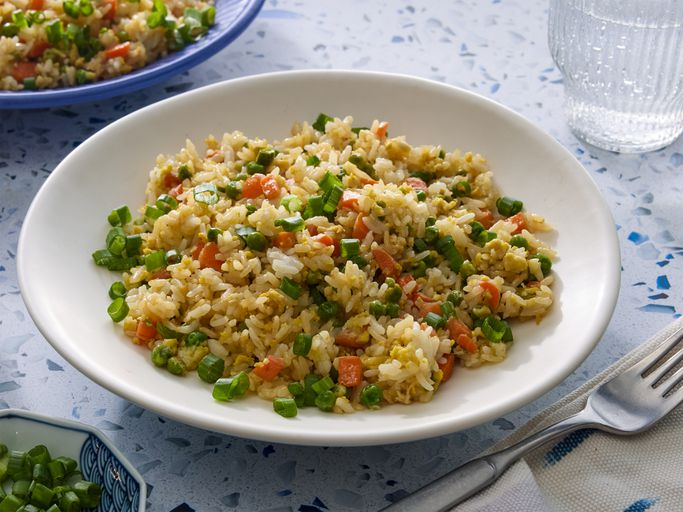

Fried rice is a quick, highly versatile dish built around stir-frying pre-cooked, cooled rice in a roaring hot wok or large skillet.
The foundation relies on a high-smoke-point oil to sear finely chopped aromatic vegetables, typically onions, garlic, carrots, peas, and green onions.
Protein variations span a wide range, easily accommodating scrambled eggs, diced chicken, pork, shrimp, or tofu, which are tossed with the grains to create a cohesive, textured meal.
The defining characteristic of a great fried rice lies in its savory, umami-rich seasoning and texture.
Chefs universally recommend using day-old, cold jasmine or long-grain white rice, as the dried-out grains fry beautifully without turning mushy or sticking together.
A simple yet potent combination of soy sauce, toasted sesame oil, and white pepper coats the grains, while a quick, high-heat toss yields a smoky, subtly charred finish known as wok hei.
Step 1
Assemble ingredients.
Step 2
Place carrots in a small saucepan and cover with water. Bring to a low boil and cook for 3 to 5 minutes. Stir in peas, then immediately drain in a colander.
Step 3
Heat a wok over high heat. Pour in vegetable oil, then stir in carrots, peas, and garlic; cook for about 30 seconds. Add eggs; stir quickly to scramble eggs with vegetables.
Step 4
Stir in cooked rice. Add soy sauce and toss rice to coat. Drizzle with sesame oil and toss again.
Step 5
Serve hot and enjoy!